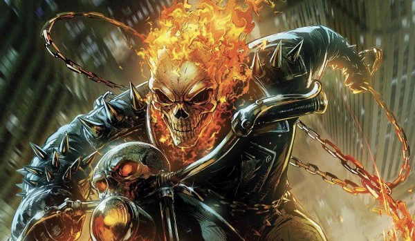

To start things off, let’s first discuss who these characters are and what their current abilities are. Dr. Strange is a character who acquired his abilities while training with the Ancient One. His main purpose for this was because he wanted to figure out a way to fix his hands surgically, but ended up becoming a great sorcerer of dimensions instead.
Dr. Strange Abilities
- Flight
- Teleportation
- Dimension Access
- Universal Awareness
- Divine Conduit (Mystic Arts)
Dr. Stephen Strange has studied almost every single type of magic due to the Book of Vishanti. Strange is the wielder of the Eye of Agamotto. The Eye of Agamotto is a powerful artifact that is able to dispel disguises, gift Strange with space/time transportation, control others, and produce illusions through the time stone. Due to these abilities alone, Strange is a huge force to be reckoned with. He is one of the most powerful characters in the entire Marvel Universe, and is heavily involved with numerous super teams such as The Avengers, X-Men, Fantastic Four, and more. Being able to practically warp reality and wipe people out of existence seems to be overpowered almost, but this doesn’t leave Ghost Rider out of the equation in terms of a one-on-one.
Ghost Rider (The Spirit of Vengeance), also known as Johnny Blaze, is a character who sold his soul to the devil in order to save his father from illness. Johnny was a popular stunt motorcyclist before he gave his soul away, he uses his motorcycle and chained-whip to travel to places and stop sinners from doing wrong.
Ghost Rider Abilities
- Motorcycle Summon
- Regenerative Healing/Invulnerability
- Hellfire Chain
- Immortality
- Penance Stare
Ghost Rider is the Master of Hellfire, meaning that he can rain fire upon any enemy in his vicinity from any given direction throughout his body. The Penance Stare is perhaps Ghost Rider’s most popular and well-known ability. It’s an ability that is able to burn your sinful soul from within through confrontation. Everyone is sinful, so if Johnny is able to activate this ability on anyone, including Strange, it’s a guaranteed death sentence. Ghost Rider is immortal and invulnerable, meaning that he practically can’t die, and also cannot take damage from most physical harm. Johnny has faced some extremely tough opponents, including the devil himself. With abilities such as these, this matchup between Johnny and Stephen seems almost even right? Unfortunately that’s not true at all.
| Year | Ability | Hero |
|---|---|---|
| 1990 | Penance Stare | Ghost Rider |
| 1968 | Mystic Arts | Dr. Strange |
| 1973 | Hell Cycle | Johnny Blaze |
So Who Wins???
These characters have faced one another numerous times in the comics, and the results are usually pretty one-sided between the both of them. In one scenario, Strange will defeat Johnny with ease, and in another scenario, Johnny will defeat Strange with ease, both due to plot. But let’s remove plot and preparation from the equation and give a fair analysis. With no prep or plot, this fight goes to Strange. Strange deals with threats on Zaratho’s level and beyond anything Ghost Rider has ever fought, including the devil. Ghost Rider’s main tools (Penance Stare/Hellfire) can all and only be negated by someone of Strange’s skills/abilities. The Penance Stare is extremely strong, but it’s fairly inconsistent. If Strange doesn’t want that move to affect him, then it wont, he’s just that strong. In terms of a close physical fight, Ghost Rider would easily win, but unfortunately it’d be extremely rare for that to ever happen for Johnny.